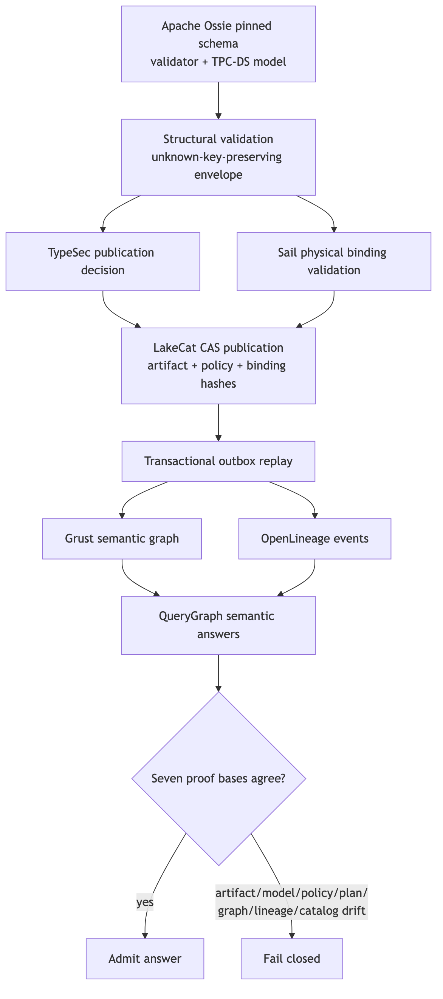

Figure 3. The Ossie path binds a pinned semantic artifact to policy, physical state, catalog CAS, graph, lineage, and answer evidence.
LakeCat’s Ossie integration treats the semantic document as an
immutable artifact, not custom table metadata. QueryGraph pins upstream
commit 1d9ebcea2932d3381c0840cc8304f0850d366509 and
verifies the SHA-256 digests of the schema, validator, and TPC-DS model
before use. The upstream validator checks the model. QueryGraph’s
envelope round-trips JSON and YAML without discarding unknown keys,
multiple models, extensions, or dialect expressions; conversion loss is
reported rather than normalized away.
The admission order is deliberately fail closed:
The TPC-DS evaluation binds seven proof bases: physical data, model, artifact, policy, plan, graph, and lineage. It then independently perturbs artifact, model, policy, plan, graph, and lineage identity. All six drift dimensions are rejected. A stale publication CAS, missing policy reference, schema drift, or unknown Ossie version produces neither catalog promotion nor downstream projection.
This separation yields a useful interoperability property. Ossie remains a portable upstream document; Sail remains the authority for physical Iceberg compatibility; TypeSec remains the authority for permission; LakeCat remains the authority for publication order; and Grust/OpenLineage remain derived views. No one component silently redefines the others’ schema.
The evaluation also ran the upstream Apache Polaris Ossie converter
on the live TPC-DS model. That path is labeled
verified-with-loss, not lossless. A machine-readable loss
report is part of the evidence, motivating a proposed converter report
contract that makes unsupported or transformed constructs explicit.
Converter success without semantic-loss accounting would be an
insufficient interoperability claim.